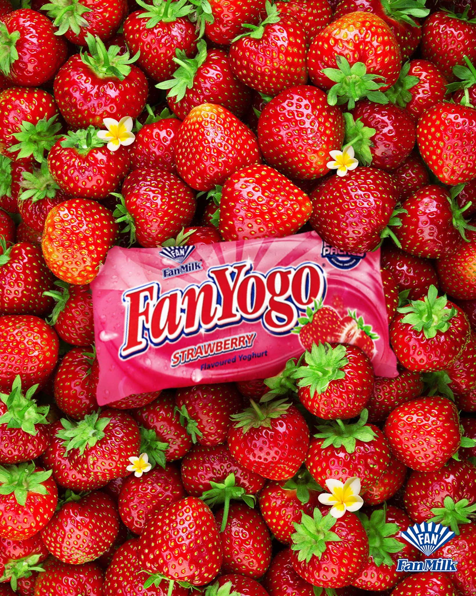

FANYOGO GALLERY
"Refreshing, creamy, and tangy, Ghana's strawberry FanYogo offers a delightful burst of fruity goodness in every sip. Always hits right on a sunny day, this frozen yogurt treat is perfect for cooling down and enjoying a taste of summer. Whether you're at the beach or just relaxing at home, FanYogo is the ultimate way to satisfy your sweet tooth and beat the heat."